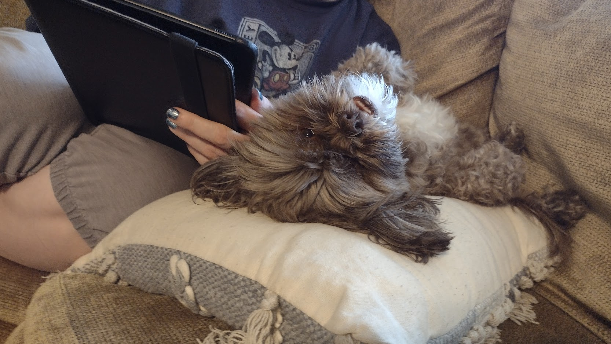
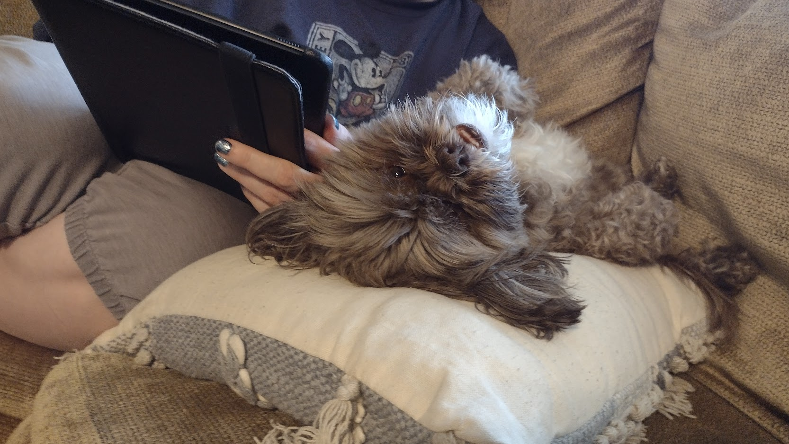

Welcome to my portfolio! Here I will introduce myself to you on a little bit more personal level so you can get to better know who I am. I am Logan Slater, currently a student attending Illinois State University for their Game Design program. I'm currently trying to learn a broad variety of different subjects that can all go into designing the overall video game experience in a flexible way. I am currently just a part time student working full time, so currently my free time to make individal passion projects is unfortunately very limited, but I hope that when the time comes, I'm able to freely create whatever I can think of wether it be for indie works or just personal endeavors.
Why are video games so important to me? Ever since I was a little kid, video games have always had such a strong impact on my every day personal life. Being born in 2001, my first ever real video game system was the Gameboy Color, and since then I've been hooked on experiencing all gaming has to offer. I was mainly raised in a Nintendo family, so growing up we had a Nintendo Entertainment System, Nintendo 64, Gameboy Color/Advance SPs, and my personal favorite: Gamecube. As of now, my own personal collection includes a Super Nintendo, various DS systems, Nintendo Switch, Playstation 4, Xbox 360, Xbox Series X, an HTC Vive VR Headset, and several various Gamecube systems including an Orange Japanese release. That's not including systems my family owns, including a Sega Genesis, Wii, Wii U, and PlayStation 2. So as you can see, video games have become a big part of my life. I wish to be able to produce and develop my own games someday that others may too find the joy video games have to bring.
I believe firmly in preserving the physical releases and the overall history of video games, so naturally I have become a big collector of sorts over the past years. It's my goal to have a collection of every gaming system released to the general public. The idea of how far video games have progressed in less than a hundred years is such a fascinating subject to discuss, how we've gone from text based games describing in detail moving around an environemt, to being fully immersed in the actual environment, to be able to reach and feel like you're physically in that world through something like Virtual Reality. As of right now, my main focus is on collecting Gamecube game releases, and then to whatever next interests me. I may not know where I will end up in the next coming years, but I know I'll try my best to ensure that gaming will always remain a part of my life.
 
